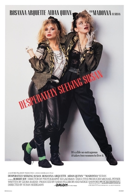

Susan Seidelman
1985
104 minutes
This is a Madonna film that always reminds you of the first time you had a loaded gun pointed at you, which was not the last time you would have a loaded gun pointed at you. That story won't be told here.
Back when this film was still fresh, Playboy had Madonna on their cover advertising a spread of pictures that they had gotten their hands on from before she was famous. You were well aware of this, but had no access to this issue since you were very young and these were the days before everything was on the Internet.
Fast-forward a few years, and you were in middle school over at your mulleted redneck friend's house, spending the night there with him and his younger brother and your other Japanese friend who would later end up in juvie. The three of you were middle-school age and your friend's younger brother was just about to graduate elementary school. Your mullet friend's parents were having a date night and they left you alone for much of the evening to do whatever teenage boys do on such occasions and make sure your mulleted friend's brother didn't burn the house down or whatever. After a token amount of bullying and wrestling his kid brother into submission, your friend finally let him join in your activities.
What straight boys that age did back at that time when left on their own was to seek out dirty pictures. Your friend decided to pop some allegedly naughty film in the VCR from his parents' locked closet, which turned out to be Beastmaster. Your friend swore there was a scene where you could see the main woman's pussy. It turned out to be a barbarian movie that had a few bare breasts in it, which seemed pretty fucking tame to you as someone whose parents were quite a bit more neglectful about what they were letting you watch. There was no full frontal nudity in this film. However, while searching for the movie your friend uncovered a small stash of Playboy magazines, one of which was the infamous Madonna issue with her on the cover in the same outfit as she wears in the film. It was like finding the holy grail. You were all initially afraid to touch it for fear of your friend's father noticing it had been disturbed from its sacred vault.
After watching the movie, your friend went back and carefully dug out the Madonna issue, keeping an eye on the clock and listening for his parents' car in the driveway. After taking a quick peek at the centerfold, which was the easiest part of the Playboy to find, you all sought out the Madonna pictorial. It was well known through the teenage boys network that Madonna was not known for shaving her armpits, and perusal of this pictorial confirmed that this was indeed a fact. The surprising full frontal nudity, which suggested Madonna had never encountered a razor of any sort in those days, made up for this perceived aberration and more than made up for the disappointing barbarian titty flick.
Not content to simply raid his father's softcorn porn mags, your friend's idiot brother soon interrupted you, wandering into the kitchen with his father's hunting rifle. He was still mad about the earlier bullying, which you had not participated in. When your mulleted friend saw him with the rifle, he became very upset and started yelling at him to put it the fuck back. Kid Brother, weapon in hand, had zero intent of doing that and challenged him, "Make me!" He put the rifle to his shoulder and pointed it at the three of you, at which your mullet friend and your Asian friend decided to run away to safety and lock themselves in your mulleted friend's room. You were the only one who remained, so Kid Brother kept the rifle trained on you for a moment to see if you were going to beat his ass, and when you didn't he lowered it to his side.
"Uh, Timmy, that thing isn't loaded, is it?" you asked hesitantly.
"No, of course not. I don't think so, at least." You didn't know shit about guns, they were certainly not allowed in your house or your father's house. Kid Brother pulled the rifle up to his shoulder again, pointing the barrel at your face, and pulled the bolt back to see if it was loaded, unknowingly cocking and loading the fucking gun. He looked in the chamber. "No, I don't see a bullet in there."
You had no idea yourself. Heaving a sigh of relief, you suggested maybe he should put the rifle and the dirty magazines and the VHS tape back in his dad's closet and we could all just act like this never happened. He dopily agreed to do just that, sticking the rifle back in the closet and re-locking it with the key kept in the nightstand. You gave the all-clear to your friends and they sheepishly emerged from his room.
Eventually your friend's father came home, thankfully not noticing that you had rifled through their bedroom. Before breakfast the next day your friend ratted out his brother for getting the rifle out, while omitting the part about the porn. After storming into the bedroom closet and securing his now cocked-and-loaded rifle that was leaning in the corner of the closet, your friend's father decided that was a perfect opportunity to give the younger child a well earned beating with a belt on his bare ass in front of the three of you and declare both siblings grounded until further notice. Then his mother made you all some pain perdu served with fried eggs.
Somehow this experience did not completely ruin Madonna for you. You're going to enjoy re-watching this film, particularly since you have a "thing" for Rosanna Arquette, who had a much less feted appearance in Playboy which you would later encounter without having a gun pointed at you in the immediate aftermath.
Time to choose something different: